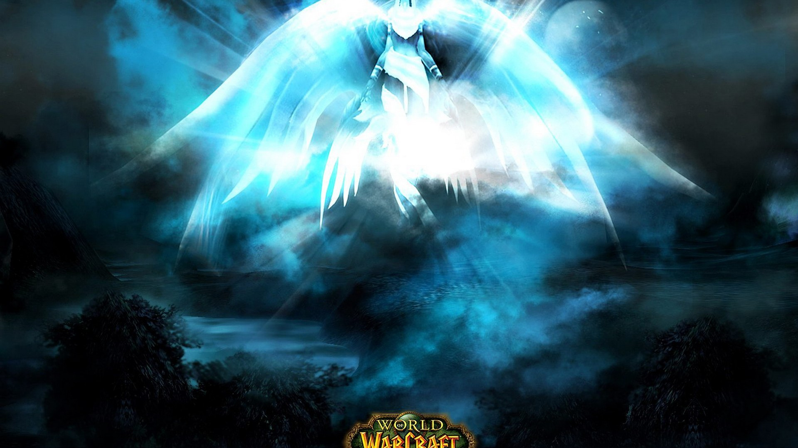

World of Warcraft
World of Warcraft (WoW) is a massively multiplayer online role-playing game (MMORPG) created in 2004 by Blizzard Entertainment. It is the fourth released game set in the fantasy Warcraft universe, which was first introduced by Warcraft: Orcs and Humans in 1994. World of Warcraft takes place within the Warcraft world of Azeroth, approximately four years after the events at the conclusion of Blizzard's previous Warcraft release, Warcraft III: The Frozen Throne. Blizzard Entertainment announced World of Warcraft on September 2, 2001. The game was released on November 23, 2004, on the 10th anniversary of the Warcraft franchise. The first expansion set of the game, The Burning Crusade, was released on January 16, 2007. The second expansion set, Wrath of the Lich King, was released on November 13, 2008. The third expansion set, Cataclysm, was released on December 7, 2010. The fourth expansion set, Mists of Pandaria, was released on September 25, 2012. The fifth expansion set, Warlords of Draenor, was announced at BlizzCon 2013 and was released on November 13, 2014. With 7.1 million subscribers as of May 2015, World of Warcraft is currently the world's most-subscribed MMORPG, and holds the Guinness World Record for the most popular MMORPG by subscribers. Having grossed over 10 billion dollars as of July 2012, it is also the highest grossing video game of all time. In January 2014 it was announced that more than 100 million accounts had been created over the game's lifetime.
|  |  |
||
Intent on settling the arid region of Durotar, Thrall's new Horde expanded its ranks, inviting the undead Forsaken to join orcs, tauren, and trolls. Meanwhile, dwarves, gnomes and the ancient night elves pledged their loyalties to a reinvigorated Alliance, guided by the human kingdom of Stormwind. After Stormwind's king, Varian Wrynn, mysteriously disappeared, Highlord Bolvar Fordragon served as Regent but his service was marred by the manipulations and mind control of the black dragon Onyxia, who ruled in disguise as a human noblewoman. As heroes investigated Onyxia's manipulations, ancient foes surfaced in lands throughout the world to menace Horde and Alliance alike.
World of Warcraft is set in the same universe as the Warcraft series of real-time strategy games, and has a similar art direction. World of Warcraft contains elements from fantasy, steampunk, and science fiction: such as gryphons, dragons, and elves; steam-powered automata; zombies, werewolves, and other horror monsters; as well as time travel, spaceships, and alien worlds. World of Warcraft takes place in a 3D representation of the Warcraft universe that players can interact with through their characters. The game world initially consisted of the two continents in Azeroth: Kalimdor and the Eastern Kingdoms. Three separate expansions later added to the game's playable area the realm of Outland and the continents of Northrend and Pandaria. As a player explores new locations, different routes and means of transportation become available. Players can access "flight masters" in newly discovered locations to fly to previously discovered locations in other parts of the world. Players can also use boats, zeppelins, or portals to move from one continent to another. Although the game world remains relatively similar from day to day, seasonal events reflecting real world events, such as Halloween, Christmas, Children's Week, Easter, and Midsummer have been represented in the game world. Locations also have variable weather including, among other things, rain, snow, and dust storms.
A number of facilities are available for characters while in towns and cities. In each major city, characters can access a bank to deposit items, such as treasure or crafted items. Each character has access to personal bank storage with the option to purchase additional storage space using in-game gold. Additionally, guild banks are available for use by members of a guild with restrictions being set by the guild leader. Auction houses are available for players to buy and sell items to others in a similar way to online auction sites such as eBay. Players can use mailboxes, which can be found in almost every town. Mailboxes are used to collect items won at auction, and to send messages, items, and in-game money to other characters. Some of the challenges in World of Warcraft require players to group together to complete them. These usually take place in dungeons—also known as "instances"—that a group of characters can enter together. The term "instance" comes from each group or party having a separate copy, or instance, of the dungeon, complete with their own enemies to defeat and their own treasure or rewards. This allows a group to explore areas and complete quests without others interfering. Dungeons are spread over the game world and are designed for characters of varying progression. A typical dungeon will allow up to five characters to enter as part of a group. Some dungeons require more players to group together and form a "raid" of up to forty players to face some of the most difficult challenges. As well as dungeon-based raid challenges, several creatures exist in the normal game environment that are designed for raids to attack.